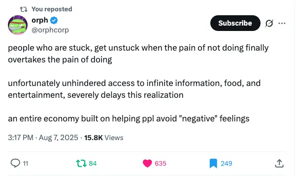
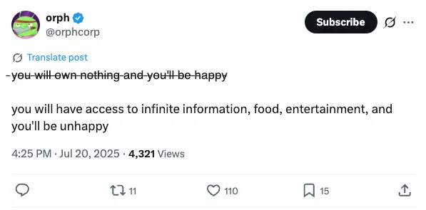

- This David Foster Wallace clip speaks to this well
- Consumerism etc
Quick excursus on parts of human nature
The 3 defilements from Buddhism
Ignorance
- Ignorance is one of the 3 Buddhist defilements → it’s an in-built part of the default state of being human
- In addition to this, Socratic Ignorance (Double Ignorance)
- Socrates believed that “double ignorance” was the worst state (Ward Farnsworth refers to it as “the master mistake”)
- Double ignorance is when you’re ignorant about your ignorance.
- You believe that you have wisdom, but you don’t so you’re ignorant or your ignorance, double ignorance)
Aversion
- And aversion is another of the 3 Buddhist defilements.
- Wincing away from painful things is a built-in part of the natural human brain, it’s something that is very difficult to overcome
- Wincing away from the idea of trying to improve your life. Learned helplessness. Overwhelm, intractability
Craving
- Craving easy pleasures, easy escapes. Comfort eating, comedy podcasts, entertainment.
The 3 defilements, built into our culture
- Quick sketch:
- Alienation of modernism & post-modernism. Atomisation, the breakdown of community, of the family. Consumer society, neoliberalism, the “consumer class” rather than the Keynesian post-war consensus. Being a “consumer”, not a citizen. The death of religion. Lack of role models, coming from broken homes. Being kegan 3. Education that never teaches you how to think. Populism, lying politicians, lack of explicit morality or ethics.
Ignorance, craving, aversion, and entertainment
- The ease of distraction means you can avoid facing the parts of your life that need changing
- You can watch 4 hours of TV a day, play video games, listen to comedy podcasts, etc
- (See also “Amusing Ourselves to Death”)

- https://x.com/orphcorp/status/1953460443004948927

- https://x.com/orphcorp/status/1946954602609340628
From “This is Water”
But the insidious thing about these forms of worship is not that they’re evil or sinful, it’s that they’re unconscious. They are default settings.
They’re the kind of worship you just gradually slip into, day after day, getting more and more selective about what you see and how you measure value without ever being fully aware that that’s what you’re doing.
And the so-called real world will not discourage you from operating on your default settings, because the so-called real world of men and money and power hums merrily along in a pool of fear and anger and frustration and craving and worship of self.
Our own present culture has harnessed these forces in ways that have yielded extraordinary wealth and comfort and personal freedom. The freedom all to be lords of our tiny skull-sized kingdoms, alone at the centre of all creation.
Let he is does not amuse himself to death cast the first stone
- For the past 2+ years I have listened to 3+ hours of comedy podcasts per day, because to go on a walk, to do the dishes, to brush my teeth etc with no entertainment would be a waste of precious time that I could spend with my parasocial besties
- If I refused to have parasocial “friends”, it’s likely I’d have much more energy for messaging my real friends
From the “The deliberate demoralisation of the masses” section of Bonesaw’s “Craniotomy”:
This systematic reduction of your existence to a statistic gradually erodes your sense of agency—the belief that your choices and actions can meaningfully shape your world. In this diminished state, summoning the desire to transcend mere survival becomes extraordinarily difficult; this pervasive atmosphere of collective resignation anchors your spirit into dirt.
- It’s wild how de-agentified we are by society, to the point where “you can do things” is a radical idea
- This has got to such a point that “you can just do things” is a “radical” meme in the tpot scene, and people over there are constantly banging the drum of agency. You can do things! You can do things! This is something you learn as an adult, if you have the requisite Circumstantial luck, if you meet awake people who are aligned with the Good
- A similar thing here → ORI idea - the universe (you’re a cell inside an organism) → “the fact that you can ask for things and the universe will respond” is not woo, we’re just in a collective organism of humans”
- Also dead internet theory, and the extension of dead planet theory, how “no one does anything”
The entire system is designed to maintain your position, perpetually rotating on the hamster wheel—creating the illusion of progress through constant movement and scurrying, while ensuring you travel in perfect circles, forever approaching yet never arriving to any meaningful destination.
Many people will live the same 6 months, over and over again without conscious knowledge.
I speak of this with such disdain because this, among other things, contributes to the dissolution of our collective consciousness, our intellectual confusion, and an almost insurmountable angst in the general population.
When stressed, distracted, and dispirited, it is distressingly easy for governing institutions to subject you to any circumstance—to dictate your thoughts and emotional states. The modern world has been engineered with a frightening precision to separate you from yourself.
It compels you to abandon your aspirations and to forget what brings you joy and real life experience because you must always concern yourself with the immediate necessities required to survive.
The only thing in this world that you can truly have control over is the thought faculty of your mind, and most have already surrendered this unknowingly.
Simone Weil’s concept of “affliction”
- from Gemini
- Simone Weil
For Weil, affliction is a state far more profound and devastating than mere suffering. While suffering can be physical or emotional pain, affliction is an uprooting of the soul, a degradation that attacks a person’s very being. It encompasses physical pain, social degradation, and psychological distress, creating a sense of absolute abandonment and personal worthlessness. A key distinction lies in its capacity to silence its victims, leaving them unable to articulate their experience.
Weil often described affliction as the “mark of slavery,” a condition that robs an individual of their personality and reduces them to a mere object. This is not just a metaphor for physical bondage but extends to any situation where a human being is subjected to the blind, mechanical forces of necessity, whether in a factory, on a battlefield, or through social oppression. This experience of being a “thing” is what separates affliction from other forms of hardship.
According to Weil, affliction forces a confrontation with the brutal reality of necessity, the unchangeable and indifferent laws that govern the universe. In this state of extreme dereliction, God appears to be absent. This perceived absence is not a denial of God’s existence but rather a fundamental aspect of the experience of affliction. It is in this void, this “dark night of the soul,” that the possibility of a unique spiritual encounter arises.
The introduction of the great essay “Craniotomy” that I’m reading today
After observing the behaviours and attitudes of the average person today, an observer needn’t spend much time before questioning themselves entirely. This spectacle: so absurd, so ridiculous, so strange, that it is more comforting to imagine that it is not society that we observe, but a zoo. An enclosure of some sort. The creatures inside of it, barely clinging on to their consciousness. Online, this conclusion becomes more accurate:
Rodent is the rule; and vermin, an honest critique.
Therefore: few will ever do it, there are so many clever ways that one avoids this honest confrontation. Truthful acknowledgement of this fact—how far one falls from their potential—is always demoralising to the human character.
On and on they go: despite this perpetual and endless cycle, they spin like gerbils endlessly. As if by some miracle the wheel is one of fortune, and suddenly everything will change if they continue to spin the loop. It has been years; yet they spin it still.
They say they wish to be great, or at the very least humbly fulfilled. Yet, their actions do not seem to align with their desires. An insurmountable chasm of paralysis and procrastination exists between their intention and execution.
How can they allow so many of their days to blur into each other? Each year passes faster, and the months become the same, the days themselves now disappear. Repeated again and again. Repeated again and again.